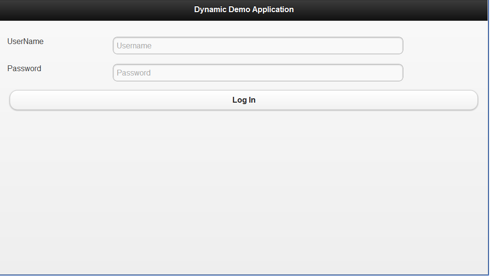
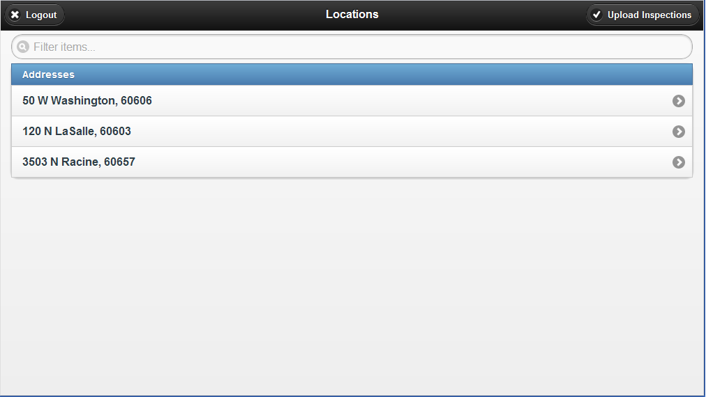
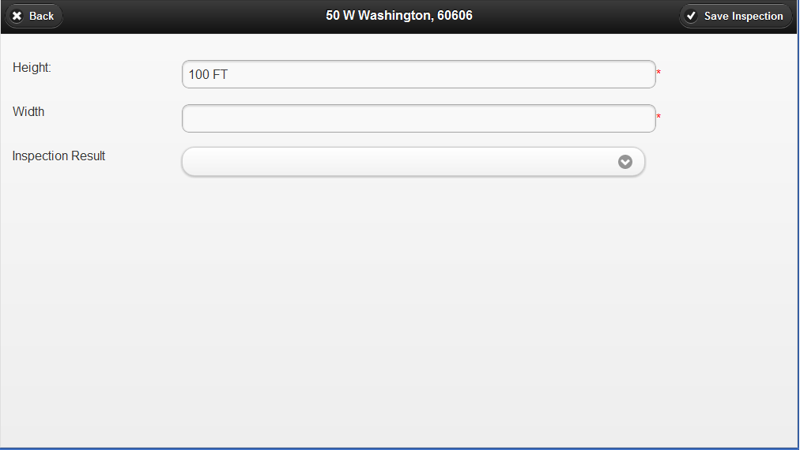

Pat McLoughlin
Questions
What is a dynamic mobile solution?
What is a dynamic mobile solution? - Real World Example
How does a dynamic solution fit into the enterprise?
How do enterprise concerns drive the design of a mobile solution?
How do enterprise concerns drive the design of a mobile solution? - Mobile Website
How do enterprise concerns drive the design of a mobile solution? - PhoneGap
jQuery Mobile to the Rescue!
How to build a dynamic form solution? - Goals
Screens - Login
Screens - Locations
Screens - Dynamic Form
How to build a dynamic form solution? - Challenges
Defintions
Entity - Represents an actual data item in the system. Examples are inspections, permits, licenses or any item that can be bound to a form
Form Template - The meta data that describes how to render a dynamic form.
Screens - Dynamic Form
How does the mobile solution get its data?
How does the mobile solution get its data?
JSON snippet of a Control
["Control":{
"controlId": "listWidth",
"controlType": "DROPDOWNLIST",
"defaultChecked": false,
"enabled": true,
"entity": "Chicago.Inspection",
"items": Array[4],
"label": "Inspection Result",
"property": "result",
"required": false}]How does the mobile solution render the custom forms?
How does the mobile solution render the custom forms?
var html = '<div data-role="fieldcontain">'
+'<label for="%CONTROLID%">%LABEL%</label>' +
+'<input type="text" name="%CONTROLID%" id="%CONTROLID%" />';
html = html.replace( /%CONTROLID%/g , textControl.controlId);
html = html.replace(/%LABEL%/, textControl.label);
if (textControl.required) {
html = html + "<span style='color:red'>*</span>";
}
html = html + "</div>";How does the mobile solution render the custom forms?
var html = '<div data-role="fieldcontain">'+
'<fieldset data-role="controlgroup"><legend>%LABEL%</legend><label for="%CONTROLID%"> </label>' +
'<input type="checkbox" name="%CONTROLID%" id="%CONTROLID%" %CHECKEDATTRIBUTE% ' +
html += ' /></fieldset></div>';
if (checkControl.checked) {
html = html.replace(/%CHECKEDATTRIBUTE%/, 'checked="checked"');
} else {
html = html.replace(/%CHECKEDATTRIBUTE%/, "");
}
html = html.replace(/%CONTROLID%/g, checkControl.controlId);
html = html.replace(/%LABEL%/, checkControl.label);How does the mobile solution render the custom forms?
$('.dynamicDataPage').remove();
//create markup
var newPage = $(render.getPageTemplate());
//append it to the page container
newPage.appendTo($.mobile.pageContainer);
How does the mobile solution render the custom forms?
How does the mobile solution render the custom forms?
function Control(id, property, required, type, controlName) {
this.id = id;
this.property = property;
this.required = required;
this.controlType = type;
this.controlName = controlName;
this.value = '';
};
Control.prototype.setValue = function (value) {
this.value = value;
};How does the mobile solution render the custom forms?
controls.controlArray = [];
controls.addControl = function (control) {
controls.controlArray.push(control);
};
controls.getControl = function (controlId) {
var controlSearch = controls.controlArray.filter(function (ctrl) {
return (ctrl.id == controlId);
});
if (controlSearch.length == 0) {
return null;
}
return controlSearch[0];
};How does the mobile solution validate and save data?
How does the mobile solution validate and save data?
controls.loadControls = function () {
//Loop through all of the controls and get the values
for (var i = 0; i < controls.controlArray.length; i++) {
if (controls.controlArray[i].controlType == "TextBox") {
controls.controlArray[i].value = controls.getTextBoxValue(controls.controlArray[i].id);
}
if (controls.controlArray[i].controlType == "CheckBox") {
controls.controlArray[i].value = controls.getCheckBoxValue(controls.controlArray[i].id);
}
if (controls.controlArray[i].controlType == "DropDownList") {
controls.controlArray[i].value = controls.getSelectValue(controls.controlArray[i].id);
}
}
};How does the mobile solution validate and save data?
controls.getTextBoxValue = function(controlId) {
return $("#" + controlId).val();
};
controls.getSelectValue = function(controlId) {
return $("#" + controlId + " option:selected").val();
};
controls.getCheckBoxValue = function(controlId) {
return $('#' + controlId).is(':checked');
};How does the mobile solution validate and save data?
app.saveEntity = function () {
//Validate the controls
var validationMessages = controls.validate();
if (!utils.isNullOrEmpty(validationMessages)) {
utils.showErrorMessage(validationMessages);
return;
}
//Loop through and set the values on the entity
for (var i = 0; i < controls.controlArray.length; i++) {
state.currentEntity[controls.controlArray[i].property]
= controls.controlArray[i].value;
}
//Clear out the control list and the state.current fields
controls.clearControls();
state.currentEntity = {};
state.currentFormTemplate = {};
state.currentEntityId = 0;
$.mobile.changePage($("#Assignments"));
};Improvements
Questions?
Pat McLoughlin